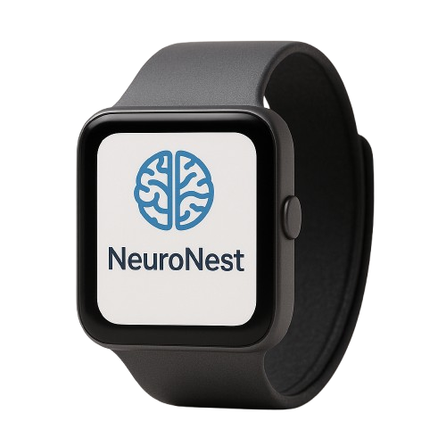
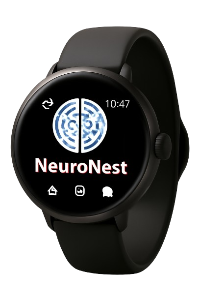

NeuroNest
Grow Your Mind, Effortlessly
NeuroNest is a wearable ecosystem designed to boost cognitive performance naturally through AI-personalized micro-learning, biofeedback, and neurostimulation. It's like a "Fitbit for your brain," combining neuroscience research with adaptive learning technology to help users learn faster, focus better, and retain information longer.


- Smart Learning Pulses: The wearable uses safe, non-invasive neurostimulation to prime the brain for optimal focus before study or work sessions.
- Micro-Learning Drops: AI curates bite-sized, 2–5 minute lessons tailored to your goals (languages, math, leadership skills) and inserts them during ideal brain states detected via EEG sensors.
- Focus Guardian: Real-time feedback alerts users when they are losing concentration, suggesting breaks or guided breathing.
- NeuroCycles: Personalized routines that combine light neurostimulation, learning sessions, and short recovery periods to accelerate mastery of new skills.
- Sync Across Devices: Works with VR headsets, AR glasses, or just your phone for immersive mini-learning experiences.